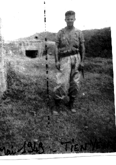
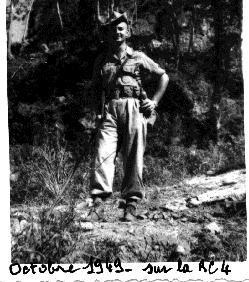
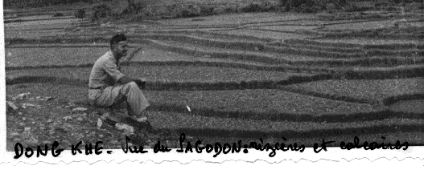
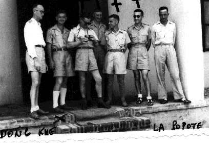
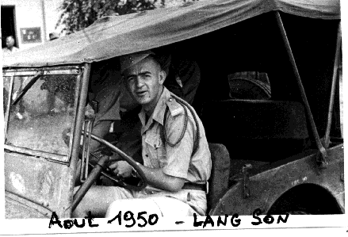

Chapitre 3
L’Indochine
L’Indochine est maintenant là devant nous, ce pays qui a tellement occupé nos pensées depuis près de deux ans. Nous n’en avons pas rêvé, mais nous nous sommes posés beaucoup de questions sur ces combats qui avaient lieu et qui semblaient présager une guerre qui ne voulait pas dire son nom. Il y avait tellement d’intérêts politiques, économiques, stratégiques et surtout idéologiques, car maintenant nous étions face au communisme, au moment où la guerre froide commençait à heurter tous les esprits.
À HAÏPHONG, c’est une certaine surprise. Pas question d’aller se dégourdir les jambes en ville. Sur les quais, devant le bateau, au milieu d’une nuée de femmes d’aspect assez misérable, tout le matériel nous attend : armement, véhicules, moyens de transmission, compléments d’habillement et d’équipements, etc…
Les sections passent les unes après les autres pour percevoir ce qui leur revient. Mais depuis le départ du MAROC, les tirailleurs sont maintenant en piteux état : toutes les chaussures égyptiennes ont perdu leurs talons, et les casques coloniaux ont de leur côté perdu leur bordure-visière, les transformant en simple calotte… ce qui ne fait pas très sérieux. Comme les chapeaux de brousse ne sont pas encore distribués par l’Intendance nous garderons pendant quelque temps le chèche même en opération. Pour les officiers, afin qu’ils ne soient pas trop facilement repérés par les tireurs isolés, nous porterons aussi le chèche à chaque sortie. Mon ordonnance me "coiffera" ainsi chaque matin, car la forme du chèche chez les marocains est très particulière.
Pendant que nous percevons le matériel et que nous nous équipons, un certain nombre de péniches de la ROYALE, viennent à quai pour nous attendre. On ne nous laisse vraiment pas souffler. Dès que nous sommes prêts, nous embarquons. Les tirailleurs sont un peu gênés par l’armement perçu : les grands fusils anglais 303, avec de longues baïonnettes, le coupe-coupe (qui sera bien utile), les fusils mitrailleurs BREN, etc… Toutes ces armes leur sont parfaitement inconnues et nous n’aurons que très peu de temps pour les instruire.
L’embarquement terminé, y compris des véhicules, nous sommes serrés comme des sardines dans un bel inconfort, et nous partons vers le nord en traversant la baie d’ALONG, effectivement très belle et qui est devenue maintenant un boulevard à touristes.
De toute façon nous n’avons pas tellement l’esprit tourné vers le tourisme, et nous aimerions bien savoir où nous allons ainsi. Dans la nuit nous recevons un bel orage (sans doute le baptême d’accueil) et au matin nous débarquons sur la plage de POINTE PAGODE au sud de TIEN YEN, au début de la Route Coloniale n°4 (la RC4) qui fera parler d’elle et nous coûtera cher dans quelques mois.
Les compagnies rejoignent les emplacements prévus, une à MONCAY, plein Est à la frontière chinoise, une au centre à BINH LIEU, une autre au Nord-Ouest sur la R.C.4 à DINH LAP, et nous avec le P.C. près de TIEN YEN.
Ma section occupe un petit Manchon, fortifié par les japonais où il reste quelques blockhaus en béton. J’en utilise un comme "logement", avec une apparence de fraîcheur dans la journée, et une chaleur étouffante la nuit. En outre il y a un grand nombre de rats qui courent tout autour sur la bordure de mon lit de camp, mais ne franchissent pas la moustiquaire soigneusement bordée… Finalement je n’aurai aucun problème avec ces bestioles.

Le lendemain, le Colonel de la Coloniale commandant le secteur, nous réunit pour nous indiquer notre mission : tous les matins, partir sur la RC4 sur une quinzaine de kilomètres, vérifier sur 200 mètres à droite et à gauche de la route qu’il n’y a pas de préparatifs d’embuscade, et rester sur place pour permettre le passage des convois. C’est ce qu’on appelle une "ouverture de route". Pour faciliter ce travail peu passionnant nous débroussaillons la forêt à grands coups de coupe-coupe afin que les viets ne puissent pas s’y dissimuler.
Enfin le Colonel, termine son exposé en nous disant "Faites vachement attention…" ce dernier conseil nous a laissé un arrière goût bizarre.
Au cours de l’une de ces journées, un tirailleur est persuadé d’avoir vu un viet se promener avec son fusil à 300 ou 400 m dans la montagne (les marocains ont une vue extraordinairement perçante) sans hésiter ni en rendre compte, il cale bien son fusil sur une branche d’arbre, règle sa hausse, tire et touche le viet qui malheureusement s’avérera être un de nos partisans d’une tribu montagnarde. Évidemment, ce premier coup de feu peu "glorieux" a fait toute une histoire bien compréhensible avec la tribu du blessé, qui n’a d’ailleurs pas survécu. Dans ces cas là, même un mauvais tireur, ne rate jamais son coup.
Après quelques semaines, entre-coupées de petites opérations dans la région, nous commençons à remonter la RC4 vers LANG SON, où le Bataillon va se regrouper. Nous partirons ensuite en convoi par THAT KE et DONG KHE jusqu’à CAO BANG. Les 130 km de route représentent un long et lent déplacement particulièrement angoissant, car nous traversons toute la zone frontière où les viets lancent des attaques très violentes et très meurtrières contre les convois de camions qui serpentent sur ces routes enserrées entre falaises et forêts.
Le passage le plus délicat est celui du col de LUNG PHAÏ entre THAT KHE et DONG KHE. Un convoi précédent y a laissé 40 camions brûlés et pas mal de tués, les blessés étant achevés au coupe-coupe. Aussi pendant que nous grimpons la côte, chacun scrute les bas côtés de la route, le doigt sur la détente. Après plusieurs attaques qui nous ont coûté cher dans ce secteur, on lancera les camions par "rafales" de 5 véhicules toutes les 10 minutes, pour essayer de limiter les dégâts. Puis les convois seront définitivement supprimés fin Octobre 1949, et ce sera le règne du parachutage.
Nous passons heureusement sans encombre et nous arrivons enfin à CAO BANG, qui nous fait l’effet d’une petite ville d’une certaine importance, avec la masse imposante de sa citadelle, datant de l’époque coloniale.
Nous effectuons quelques petites opérations d’accoutumance avec le 3ème Régiment Étranger d’Infanterie, qui occupe CAO BANG avec un bataillon, et nous partons pour une mission plus importante. Il faut rejoindre (à pied) BAC KAN à 120 km au Sud-Ouest, par la RC3 bis pour protéger le repli d’un autre bataillon du 3ème Étranger, dont tous les postes sont installés le long de la route. Tout cet axe est donc abandonné aux viets.
Nous arrivons sans gros ennuis à BAC KAN, et je suis chargé, avec ma section, de tenir l’entrée Sud de la bourgade, pendant que les légionnaires embarquent tous leurs matériels sur les camions.
J’occupe un petit mamelon où il y a pas mal de broussailles et au sommet duquel il y a les ruines d’une pagode, avec de grosses colonnes de bois. Bien sûr, dès que la nuit tombe, les viets qui avaient dû observer notre installation, viennent nous "tâter", et nous devons bagarrer toute la nuit. C’est au cours de cette nuit là, que m’étant placé debout, à l’abri derrière une colonne, pour mieux commander, des balles viets sont venues frapper la dite colonne. Je n’ai rien eu, mais le choc des balles a surtout dérangé un nid de guêpes, qui, pas contentes du tout, sont venues me piquer le sommet du crâne à 2 ou 3 endroits. Je garde un souvenir très douloureux de cette affaire. Mais cette nuit là me vaudra ma première citation en INDOCHINE (pas pour les guêpes…).
Au matin, pour décrocher, les viets étant toujours là, deux chars légers du 1er Chasseurs, viennent m’aider à quitter ce coin qui commençait à ne pas être très salubre.
Je retraverse BAC KAN dans l’autre sens, suivi par ma section et je passe à côté d’une pagode en flamme. Je vais jeter un coup d’œil à l’intérieur, et j’aperçois un petit vase que je trouve joli. Plutôt que de le laisser être détruit par l’incendie, je le récupère et le met dans mon sac enveloppé dans une chemise de rechange. Je le transporterai jusqu’à CAO BANG où je le calerai à l’intérieur d’un bambou pour l’envoyer à mes parents. Le petit vase est toujours dans ma bibliothèque, et j’y tiens beaucoup.
Après cette opération qui a duré une douzaine de jours assez durs nous apprécions un peu de repos avant de repartir dans la région de NGUYEN BINH pour évacuer d’autres postes et surtout pour désarmer et abandonner des tribus de montagnards, en particulier des MANS, qui nous faisaient confiance pour lutter contre les viets. Nous les avons livrés désespérés et sans défense aux viets qui les ont massacrés. Nous étions horrifiés d’accomplir de tels actes, d’être les instruments de telles lâchetés. Mais il y en aura bien d’autres, non seulement en INDOCHINE, mais aussi au MAROC et surtout par la suite en ALGERIE avec les harkis. Ces évacuations de postes, ces abandons de populations, correspondaient certes à un plan de restructuration préétabli au plus haut niveau, mais pour nos tirailleurs c’était mauvais pour leur moral et ils commençaient à se poser des questions…
À la fin de l’été, après avoir participé au repli sur CAO BANG de tous les postes installés dans les environs, nous apprenons que toutes les unités (Légion, Tirailleurs Algériens, blindés, etc…) vont partir pour LANG SON. Seul notre bataillon va rester dans la région à CAO BANG et à DONG KHE avec deux compagnies dans chaque poste.

Ma compagnie, avec la 3ème compagnie part pour DONG KHE, relever la légion. Pour ma part je suis "gâté" une fois de plus, et désigné pour aller occuper avec ma section, le petit poste du col de LOUNG PHAÏ entre DONG KHE et THAT KHE, dans un endroit de sinistre mémoire.
Je vais m’installer avec mes fidèles tirailleurs dans un petit poste en rondins, dont les défenses extérieures sont des bambous pointus enfouis dans le sol. J’ai un mois de vivres, un poste radio (qui tombera en panne le lendemain de notre arrivée) et un mortier de 81. Je suis dans un décor certainement très beau mais sinistre et impressionnant pour y faire la guerre. J’ai de l’autre côté de la route d’immenses falaises, et je suis entouré de forêts épaisses, pleines de singes qui, la nuit, viennent dans les cuisines (installées à l’extérieur du poste) pour voler tout ce qu’ils peuvent en se chamaillant.
Je suis donc seul, sans radio et sans aucune possibilité de liaison. Comme il faut au moins trois bataillons pour ouvrir et tenir les 15 km de route pour venir jusqu’à moi, ce n’est pas demain la veille que je verrai des troupes amies. Si les viets veulent m’attaquer, avec leurs méthodes habituelles, mon poste tiendra au maximum une demi-heure et puis nous disparaîtrons en fumée… Ce n’est pas très enthousiasmant, mais nous ne sommes pas ici pour pleurnicher sur notre sort. Il faut faire avec ce que nous avons, et faire au mieux en vivant en circuit fermé. Patrouille dans les environs, travaux d’amélioration des défenses du poste (je m’inspire de mes souvenirs du livre de Jules César "De bello Gallico" et des dessins qu’il contient sur les défenses gauloises à ALESIA…). Nous allons aussi visiter et amadouer un minuscule village MAN où je soignerai les goitres, très fréquents dans cette région en leur faisant boire de l’eau additionnée de teinture d’iode. Ils s’y habitueront vite et viendront au poste tous les matins chercher leur boisson favorite.
Une nuit, un de mes sous-officiers marocains vient me prévenir qu’un tirailleur est en train de mourir ( !). Je vais voir. Ses copains l’ont déjà allongé sur le côté, vers la Mecque et récitent des prières. Effectivement, il n’a pas l’air en très bon état. Sans radio, pour avoir les conseils d’un toubib, il faut que je me débrouille, ou que je me prépare à l’enterrer…
J’ai une caisse de médicaments, qui m’a été donnée pour mon installation ici. Je l’ouvre et horreur ! ce sont des médicaments de l’armée japonaise sans aucune traduction… Je repère des ampoules avec un liquide vert, je pense que ce doit être de l’huile camphrée excellente pour le cœur, du moins je le suppose. Je remplis une seringue, un bon coup dans les fesses et je vais me recoucher tandis que les tirailleurs continuent de prier pour leur copain.
Le lendemain, à mon grand étonnement, tous les tirailleurs arborent un grand sourire, et je vois mon mourant frais comme un gardon… Je n’ai jamais su ce qu’il a exactement eu, mais je suis devenu un grand chef…
Enfin, un jour, le 5 novembre cela fait près d’un mois et demi que je suis ici complètement isolé, avec des vivres qui commencent à se raréfier, quand je dénote une certaine activité aérienne inhabituelle. J’aperçois, aux jumelles, venant de THAT KHE, les colonnes d’infanterie qui abordent la longue montée vers le col de LUNG PHAÏ. Au milieu des colonnes à pied, quelques blindés et des GMC bricolés, sur lesquels ont été montés des canons automatiques antiaériens BOFORS de 40 mm, qui lâchent des rafales d’obus " a priori " sur les falaises. Rien n’y fait, car les viets sont là, leurs armes, mitrailleuses et mortiers se dévoilent et tout est bloqué.
Le terrain est vraiment difficile. La route est au flanc d’un long mouvement de terrain de 4 à 5 km sur lequel tout en haut, à l’extrémité est mon poste. Sous la route, le ravin est très profond avec une végétation extrêmement dense. C’est dans ce ravin que se cachaient les vagues d’assaut viets pour attaquer à la grenade et au coupe-coupe les convois bloqués. De l’autre côté du ravin s’élèvent les falaises impressionnantes où sont retranchés les viets.
Donc, en bas, chacun a le nez dans la poussière, et moi qui suis " au balcon " je ne peux rien faire sans radio et avec un mortier hors de portée des falaises.
Un MORANE d’observation, particulièrement courageux ou inconscient, remonte le long de la vallée à l’altitude de mon poste et… des falaises. Il n’atteindra pas le col. Tiré comme un lapin, je le vois balancer ses ailes à droite puis à gauche et tomber comme une pierre au fond du ravin.
Les viets hurlent de joie. Pas pour longtemps. Dans les unités qui montent vers le col, il y a tout un Thabor de Goumiers marocains. Un certain nombre d’entre eux avec l’Adjudant-Chef L… vont attaquer à leur manière en s’infiltrant dans la falaise et en grimpant de façon acrobatique. Arrivés sur la crête, c’est la ruée sur les viets ahuris et un joyeux massacre, comme les allemands y avaient goûté en ITALIE et en PROVENCE pendant la guerre. Un tir d’artillerie de 105, bien réglée parachève l’affaire et la voie est libre. Les unités peuvent occuper les abords de la route et le convoi peut passer vers DONG KHE.
Sur la route, que j’aperçois au pied de mon poste il y a une agitation bien inhabituelle pour moi, et ce n’est pas désagréable à regarder. Je vois arriver mon Commandant de compagnie, le Capitaine CASANOVA, qui vient m’annoncer que mon poste est abandonné et que je rentre à DONG KHE.
Nous ne traînons pas pour réunir tout le matériel, munitions, etc… et mettre quelques charges d’explosifs pour détruire le poste et je suis prêt, sans aucun regret à descendre sur la route pour embarquer sur les camions.
Je prends avec moi, le drapeau qui flottait sur le poste, bien délavé et déchiré. Je l’ai offert en 1988 au Musée de l’Infanterie à Montpellier, où il est exposé.
DONG KHE est une bourgade à une dizaine de kilomètres de la CHINE, au carrefour d’une route y conduisant avec la RC4 qui, elle, longe la frontière. Il y a bien une citadelle de l’époque coloniale, moins imposante qu’à CAO BANG, mais bien utile. Nous sommes tout de même dans une cuvette, entourée de calcaires menaçants où il y aura juste assez la place d’installer une petite piste d’atterrissage pour le MORANE d’évacuation des blessés (mais aussi du courrier, car si nous le recevons assez rapidement grâce aux parachutages, le courrier au départ est plus aléatoire…).
Puisqu’il n’y a plus de convois, nécessitant trop de monde pour leur protection, nous nous habituons aux parachutages journaliers de 2 ou 3 avions. Tout ce qui n’est pas fragile (vêtements, rouleaux de barbelés, tabac, sac de riz, etc…) est largué sans parachute au plus près du sol. Tout le reste est parachuté, et il sera même utilisé des parachutes en papier ( !). Les moutons pour les fêtes musulmanes seront parachutés vivants, de même que les cochons pour les partisans, ainsi que les canards et les poulets dans des paniers empilés les uns sur les autres. Les parachutes en tissu sont évidemment récupérés, roulés et stockés en attendant un hypothétique convoi (ils brûleront tous lors de l’attaque de Mai 50). La garnison de DONG KHE est composée de 2 compagnies de tirailleurs marocains, d’une petite compagnie de partisans et de 2 canons de 105. Le tout est aux ordres du Capitaine CASANOVA, un officier vif, dynamique et attachant que j’apprécie beaucoup.

Ma compagnie occupe la citadelle avec les artilleurs, sauf ma section qui occupe le " Point d’Appui Sud " au débouché de la route venant de THAT KHE. Ce point d’appui comporte une maison en dur où je m’installerai avec un groupe, puis en allant vers le Sud-Ouest sur un petit mamelon dit du " Pagodon " un second groupe dans un blockhaus, et enfin toujours vers le Sud-Ouest le 3ème groupe au sommet d’un piton en pain de sucre dans un petit poste que nous construisons à grands coups d’explosifs. Ce dernier petit poste a une excellente vue sur la route de THAT KHE, et c’est à nous qu’il va donner du fil à retordre en Septembre 50.
La population civile est assez réduite, 200 à 300 personnes, avec une importante communauté chinoise et l’inévitable maison de jeu.
Les journées passent en travaux d’aménagements des défenses et il y a beaucoup à faire. Nous ne recevons que très peu de ciment pour bétonner, aussi nous construisons beaucoup à la chaux et au sable ce qui ne présentera pas la même résistance que le béton aux obus. Mais pour faire de la chaux il faut des pierres de calcaire (il y en a à revendre) et du bois pour faire fonctionner des fours à chaux. Nous récupérons tout le bois disponible sur les maisons des villages des environs abandonnées, et je suis désigné " spécialistes des explosifs " pour abattre et débiter tous les arbres énormes que nous trouvons dans la cuvette.
Il y a tout de même une bonne activité militaire avec des patrouilles aussi profondes que possible, ainsi que des embuscades. Au cours de l’une d’entre elles, une superbe colonne viet s’engage sans s’en rendre compte dans le piège en V, tendu par ma section. Malheureusement, un tirailleur ouvre le feu trop tôt sans attendre mon signal. Nous ne pouvons récupérer que 3 viets.
Nous avons une popote sympathique pour notre petit groupe d’officiers, où le jeu " apéritif " journalier consiste à vider plusieurs chargeurs de pistolet sur des boîtes de conserve. Nous ferons ainsi beaucoup de progrès en tir instinctif.

Lnt de VALS (partisans), Lnt ASSID (3ème Cie) En janvier 1950, nous apprenons que l’armée communiste chinoise arrive à la frontière en repoussant devant elle une armée nationaliste de TCHANG KAÏ CHEK, qui va entrer au TONKIN en affirmant vouloir continuer le combat à nos côtés.
Effectivement, un beau matin les sentinelles n’en croient pas leurs yeux. Une nuée de chinois arrive devant DONG KHE. Une délégation chinoise vient nous demander, en anglais, le libre passage. Nous nous réfugions derrière les instructions que nous demandons à HANOÏ par radio. Les ordres sont " clairs " : interdire, s’il le faut par les armes, le passage des chinois et les refouler en CHINE…
Une fois de plus l’État-Major donne un ordre idiot et irréalisable. Il y a 8000 chinois devant nous, très bien équipé avec de l’artillerie et nous sommes 300…
Toujours par radio, nous essayons de faire comprendre le problème au Commandement à HANOÏ. Pendant ce temps, nous invitons le Général chinois VU HONG KHAN à déjeuner à la popote. Il arrive avec une centaine de gardes du corps sur-armés, qui encerclent la popote pendant tout le repas qui se passe très bien. Le Général chinois très satisfait de l’accueil offre un beau parabellum à notre Capitaine.
Heureusement, HANOÏ a tout de même modifié ses ordres " laissez passer les chinois, en les dirigeant sur THAT KHE, où les renforts sont envoyés pour les désarmer, mais au passage comptez les hommes, les armes automatiques, les camions, etc… "
La colonne chinoise commence à défiler, nous sommes vite débordés dans nos essais de comptage, et les tirailleurs ravis font du troc avec les soldats chinois pour récupérer leurs grosses pièces de monnaie en argent à l’effigie de Maximilien d’Autriche, Empereur (éphémère) du Mexique par la grâce de Napoléon III. L’histoire est parfois curieuse…
Quant à nos chinois, ils arriveront sans encombre à THAT KHE où après pas mal de péripéties, ils finiront par être encerclés avant LANG SON, désarmés, regroupés et finalement expédiés à TAÏWAN.
Mais maintenant nos voisins sont les chinois de MAO copains des viets et nous allons très rapidement en subir les conséquences.
En Janvier 1950, comme prévu, je suis nommé Lieutenant, mais de toutes façons c’est le seul grade de l’armée française automatique que l’on obtient après deux ans d’ancienneté comme sous-Lieutenant.
Un matin de mai 1950, le 25, à 7H au moment du rassemblement pour la répartition du travail, nous recevons une bordée d’obus qui tombent sur la citadelle et le village.
Chacun rejoint son emplacement de combat, et nous apercevons bien dans les calcaires les départs des coups de canon, car les viets à cette époque ne savent tirer qu’à vue. La radio alerte le commandement et on nous envoie l’aviation. Mais le plafond est très bas, le temps est gris et brumeux. Un pilote casse-cou, que nous connaissons bien, le Commandant BOUDIER, pique dans la brume, passe au-dessus de la citadelle en rase-mottes en battant des ailes et redisparait dans les nuages. Quand la brume se lèvera les chasseurs reviendront, mais nous n’avons aucune liaison radio sol-air. On tire des obus fumigènes sur les objectifs pour les indiquer aux pilotes. Ils font ce qu’ils peuvent, quelques passages à la mitrailleuse, mais en fait ils ne nous sont pas d’un grand recours, d’autant plus que les viets cessent le tir quand les avions sont là, et le reprennent dès qu’ils tournent le dos.
Nous recevons toujours autant d’obus sur la figure. Une partie de la citadelle et les paillotes du village brûlent. Nos deux canons de 105 sont touchés et ne peuvent tirer. Le Capitaine CASANOVA est tué, ainsi que mon adjoint, le Sergent-Chef REMOND. La maison que j’occupais reçoit des obus sur le toit, ce qui fait un joli feu d’artifice avec les tuiles. Heureusement que nous sommes dans les tranchées creusées tout autour. La nuit se passe avec quelques attaques viet au Nord, mais sans gravité. Le lendemain, nous apprenons qu’un Thabor marocain quitte THAT KHE pour venir jusqu’à nous (il a 30 km à faire dans un terrain épouvantable et mettra plusieurs jours), et qu’un bataillon de parachutistes est en alerte à HANOÏ.
Toute la journée se passe avec les tirs d’artillerie et de mortier et des assauts en fin de journée qui sont repoussés.
Mais à la nuit tombée, le Capitaine B… qui avait pris le commandement pour remplacer le Capitaine CASANOVA, prend la plus mauvaise décision qu’il pouvait choisir et en tout cas indigne d’un chef responsable. Jamais, j’en suis intimement convaincu le Capitaine CASANOVA n’aurait agi de la sorte.
Obnubilé par la colonne de goumiers partie de THAT KHE pour nous " secourir ", B… décide d’aller à leur rencontre et d’abandonner DONG KHE. C’est un véritable abandon de poste devant l’ennemi ! Il n’y avait pourtant qu’une seule chose à faire : Se regrouper tous dans la citadelle et ses abords immédiats et tenir toute la nuit. Nous étions encore assez nombreux pour résister, même avec un peu de casse. Dès le jour venu les paras auraient sauté sur le poste, et nous n’aurions pas perdu la face.
Au lieu de cela, c’est l’évacuation précipitée qui est ordonnée, et dans ce cas là nos tirailleurs ne sont pas très bons et ont tendance à une certaine agitation qui peut facilement engendrer la panique et la déroute.
Les unités plus ou moins constituées passent par mon point d’appui pour prendre la route de THAT KHE. On me prie de suivre le mouvement mais je refuse net. J’ai un groupe au sommet du Piton Sud, je vais d’abord aller le chercher et non pas l’abandonner.
Avec mes autres tirailleurs nous grimpons au sommet du Piton où mon Sergent SEGHIR, ne fait que répéter " comme à CASSINO, mon Lieutenant, comme à CASSINO !… " Il y avait été blessé, et exagérait un petit peu. Mais ça tombait tout de même pas mal. Ayant regroupé ma section, je redescends et arrivé sur la route, il n’y a plus personne. Tout le monde a filé. Seul le village continue de brûler et éclaire sinistrement la citadelle, tandis que l’on entend les viets crier de joie, sans doute un peu surpris d’une victoire aussi facile.
Je décide alors de remonter sur mon Piton et d’aller me planquer dans les fourrés à mi-pente. Si nous sommes attaqués, nous nous défendrons, sinon nous attendrons. Je ne sais pas trop quoi d’ailleurs. Les tirailleurs n’en mènent pas large, mais je suis avec eux, ils ont confiance en moi et moi en eux.
Le jour arrive, nous sommes coincés dans notre broussaille d’autant que les viets sont partout pour piller tout ce qu’ils peuvent récupérer.
Si rien ne se passe dans la journée, nous tenterons de partir vers THAT KHE la nuit prochaine, mais cette éventualité est pleine d’embûches et d’incertitudes. D’ailleurs la plupart de ceux qui sont partis avec le Capitaine B…, ont été tués ou fait prisonniers. Une petite dizaine a pu passer.
La journée est longue, sans manger, sans boire, sans fumer, sans tousser et faire le moindre bruit. Les viets passent plusieurs fois à quelques mètres, sans se douter qu’une section de tirailleurs est là.
Vers le milieu de l’après-midi, les avions de chasse reviennent et commencent à mitrailler tout ce qui bouge sur la citadelle et aux environs. Nous recevons quelques douilles mais pas de balles…
Dès que les chasseurs arrêtent le tir, nous entendons le bruit caractéristique de nombreux avions de transport (en fait plus de 30 JU 52 et DAKOTA) et c’est le parachutage du 3ème Bataillon Colonial de Commandos parachutistes. Si nous n’avions pas évacué DONG KHE aussi précipitamment, il était prévu de les faire sauter dans la matinée. Apprenant la décision du Capitaine B…, il y a eu un certain flottement à HANOÏ et le saut a été reporté dans l’après-midi pour reprendre le poste.
C’est un moment de joie intense pour nous. Nous entendons les tirs de quelques combats, mais pour moi, avant de rejoindre les paras, il vaut mieux prendre quelques précautions pour que nous ne soyons pas confondus avec les viets. Je fais attacher un chèche au bout d’un fusil et nous sortons de nos broussailles colonne par un. Je suis en tête avec mon tirailleur qui agite frénétiquement son fusil-drapeau et nous rencontrons enfin un groupe de paras un peu ahuris.
Ils pensent que nous sommes les goumiers qui arrivent de THAT KHE, mais ils mettront encore deux ou trois jours avant de nous rejoindre. Je suis tout de suite dirigé vers le Colonel GRAAL qui commande l’opération. Je lui raconte mes aventures et il me donne le commandement du 8ème RTM, qui s’est grossi, outre ma section de quelques individuels. Je suis bien sûr chargé d’organiser ces rescapés pour en faire une petite unité militaire présentable, mais également de régler les problèmes d’organisation et de ravitaillement. Une tâche pénible dont je suis chargé est de rassembler les corps des tués, d’essayer de les identifier et de les enterrer au pied du piton Nord, où très vraisemblablement ils sont toujours.
Nous apprenons que la colonne de goumiers qui venait à notre secours est bloquée à quelques kilomètres de DONG KHE et qu’ils ont besoin de ravitaillement en vivres. J’organise donc une colonne de ravitaillement et ce sont les " assiégés " qui vont au secours de leurs " sauveurs "…
Enfin, les goumiers arrivent à DONG KHE, commandés par le Colonel LEPAGE (dont on reparlera) avec comme adjoint le Commandant LABATAILLE, un colosse du Sud-Ouest à la voix rocailleuse et la moustache conquérante, avec lequel je sympathise. Malheureusement, il sera tué quelques semaines plus tard.
J’apprends ainsi la quasi disparition des éléments des deux compagnies qui sont partis avec le Capitaine B…. Quel gâchis en vies humaines et quelle humiliation aussi, car dans quelques jours lorsque je redescendrai à THAT KHE, un Général refusera de me serrer la main car dans l’esprit du commandement le 8ème RTM a failli à son devoir. De même aucune citation ne sera accordée, et ce sera difficile de l’expliquer aux tirailleurs. C’est dur de subir ainsi la conséquence de l’incompétence et de la couardise d’un " chef ". BRUN avait été fait prisonnier avec quelques autres qui sont morts. Quand il nous a rejoint au camp n° 1 je l’ai ignoré ainsi qu’après la libération. De son côté, il n’a jamais cherché à me revoir en face…
Cela fait maintenant beaucoup de monde à DONG KHE. Les patrouilles envoyées dans les environs récupèrent nos véhicules et nos deux canons, déjà démontés…. Pour ma part, toutes mes affaires ont été pillées, et je me retrouve avec ce que j’ai sur le dos et une cantine vide…
Un convoi de camions arrive jusqu’à DONG KHE, avec du matériel. Il embarque pour le retour les paras du 3ème BCCP et mon détachement de survivants. Le Thabor va rester sur place, pour remettre en état et développer les défenses.
Après une bonne nuit de repos à THAT KHE où je retrouve des copains de promo, en particulier BOUDIER, j’arrive à LANG SON. J’y retrouve la base arrière du bataillon et des renforts de tirailleurs pour compenser les pertes, ainsi que le Capitaine GUIDON pour remplacer le Capitaine CASANOVA.
Nous constituons une bonne compagnie, et en attendant le retour de CAO BANG du reste du 8ème RTM, nous sommes envoyés faire des opérations dans le massif du BAO DAÏ, près de LUC NAM, à 70 km au Sud-Ouest de LANG SON.
Nous y faisons quelques incursions payantes chez les viets et nous ramenons armes et documents divers. Dans un P.C. abandonné en pleine forêt, je récupère des liasses de timbres-poste viets que j’adresserai à mon père collectionneur. Je récupère aussi une belle décoration viet dans sa boîte, avec une photo de Staline, que je possède toujours. C’est dans ce secteur que j’aurai une seconde citation.
Je suis désigné, un beau jour, pour aller faire une mission auprès de l’État-Major à HANOÏ. Alors que je ne suis qu’à 60 km à vol d’oiseau d’HANOÏ, je mettrai deux jours pour y arriver en empruntant toutes sortes de moyens de communication.
Tout d’abord un premier déplacement à pied vers le P.C. du secteur. Puis je rejoins LUC NAM sur un petit cheval chinois, pas plus grand qu’un poney, mais très robuste, escorté par des partisans aux mines patibulaires. A LUC NAM, j’embarque sur un petit bateau de la marine pour descendre le fleuve par SEPT PAGODES jusqu’à HAÏ DUONG. Là, je passe la nuit au P.C. du secteur et le lendemain je pars en Jeep avec le convoi jusqu’à HANOÏ. La mission accomplie, je vais prendre un avion militaire et je me retrouve à LANG SON.

Entre temps le Bataillon est revenu de CAO BANG et nous sommes tout à la joie de nos retrouvailles après 8 mois de séparation et notre gros pépin de DONG KHE. Le bataillon se réorganise : nous percevons l’armement français plus commode et des tenues de combat décentes, pour remplacer les salopettes de jardinier que nous avions pendant l’hiver 1949.
Nous nous préparons pour la prise d’armes du 14 Juillet où je recevrai ma Croix de guerre avec ses deux " clous ". Après la prise d’armes nous sommes invités à un cocktail chez le Colonel Cdt la zone frontière. C’était le Colonel CONSTANS qui sera tristement célèbre quelques semaines plus tard, mais qui à LANG SON vivait comme un roitelet aux réceptions réputées, disposant de toute une cour de légionnaires (dont un Sergent-Chef, ex-ministre de VICHY…).
A notre arrivée, les légionnaires très stylés, nous servent des boissons glacées, qui sont les bienvenues car il fait une chaleur torride. Mais ces "rafraîchissements " s’avéreront de redoutables cocktails alcoolisés, et au bout de 3 ou 4 verres, nous sommes tous d’une humeur plus que joyeuse…
Nous partons dîner au Mess de garnison, et à la fin du repas, où nous sommes tous en parfaite forme, les assiettes commencent à voler par les fenêtres, vers le fleuve en contrebas, puis les verres, les bouteilles et carafes serviront de projectiles pour descendre toutes les bouteilles alignées derrière le bar. Les deux serveurs sont terrés sous le bar en attendant que le massacre s’arrête. Effectivement, comme il n’y a plus rien à casser, et que nous nous sommes bien défoulés, nous repartons, toujours en Jeeps, quelque peu zigzaguantes vers nos cantonnements.
Le lendemain, notre patron le Commandant ARNAUD, saint homme, très croyant, célibataire et très strict (mais qui la veille n’était pas le dernier à faire l’imbécile) nous réunit et nous lit la facture du Mess où le gérant a soigneusement chiffré le résultat de nos exploits. Chacun paye son écot pour une somme rondelette, mais nous sommes " riches " puisque cela fait plusieurs mois que nous ne dépensons rien, et surtout nous avions besoin de cette explosion pour exorciser quelques moments difficiles passés et peut-être à venir.
En effet nous ne savions pas ce que le destin nous réservait dans très peu de temps…